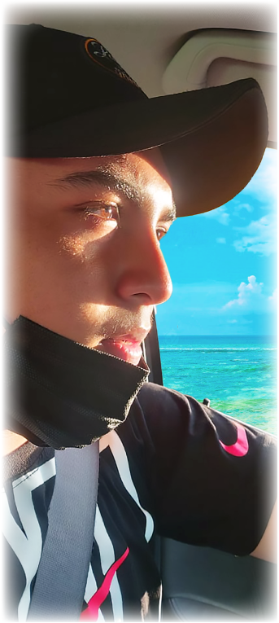

HOLA!
SOY MATIAS BANDENAY
La marca MB “Creartive” ha sido creada en base a mi segundo nombre Matias y mi primer apellido Bandenay, añadiendo en la parte inferior la palabra Creartive compuesta por 2 palabras del inglés (Creative y Art). Lo que busco es satisfacer las necesidades de mis clientes en la parte gráfica usando todas mis habilidades como diseñador.